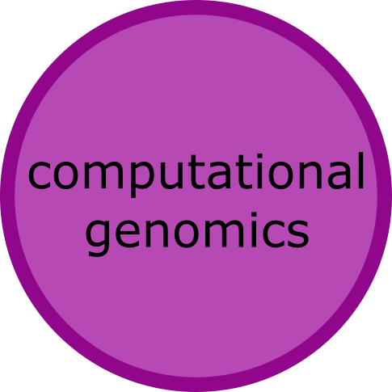

I am a current second-year MD/PhD student at Vanderbilt University in Nashville, TN. The self-generated “Interest Map” above illustrates the many interconnected domains of my scientific and research interest. My overarching scientific aims are to use computational and informatics-based approaches to genomic medicine. Learn more about how I generated my interest map here.
Current second year Medical Scientist Training Program (MSTP) Student where I am exploring my clinical interests through the MD/PhD dual degree
Spent time in India studying public health with collaborators at the All India Institute of Medical Science (AIIMS) to investigate barriers to health care for women. These findings were published in an Indian scientific journal and in multiple local newspapers.

B.S. from the University of North Carolina Chapel Hill in Quantitative Biology. I focused my studies on human genetics
Worked to create a pipeline for CNV calling for use in pharmacogenomic association studies
Investigated RNA structure’s relationship with human disease
Developed a queryable database integrating CNV data with exome sequence data to investigate Autism Spectrum Disorder
Both self-taught and formal education in computer science, information science, and programming
Comfortable with Python, R, MATLAB, Perl, JAVA, AWK, Linux shell scripting, Mathematica, MS office, HTML, and CSS
Proficient data presentation and in web authoring tools like Adobe Flash, Illustrator, Photoshop, and Lightroom